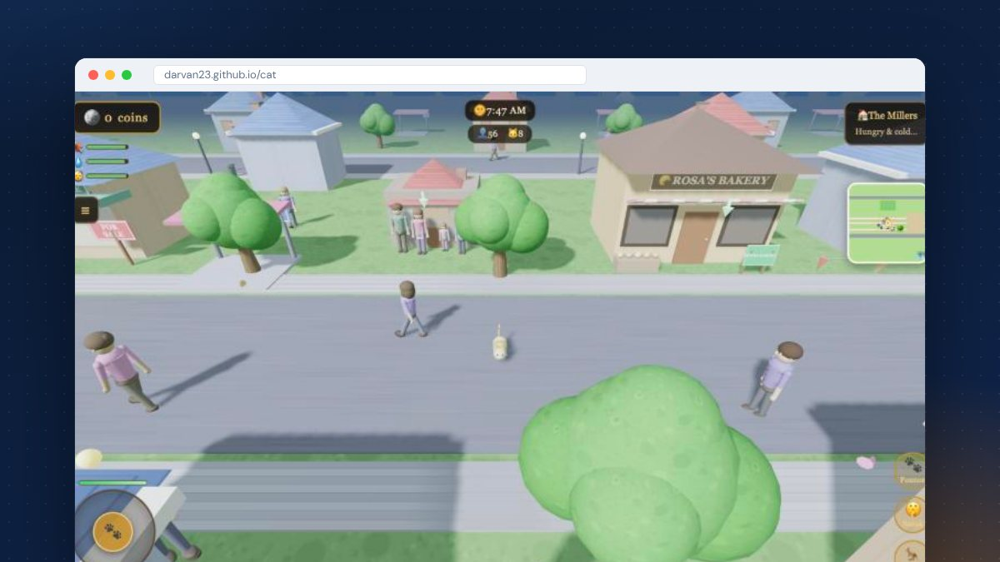
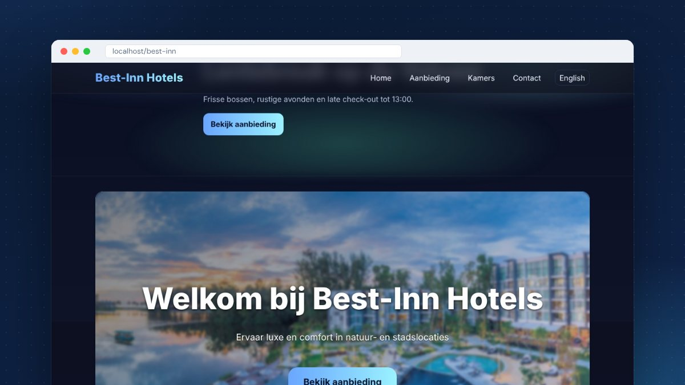
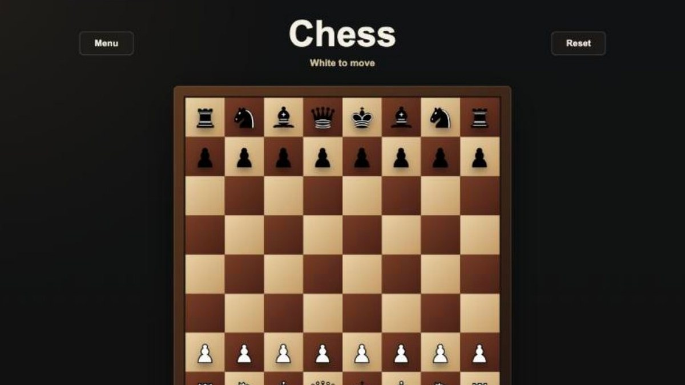

Stagiair Software Development
WeNine B.V., SchiedamBOL-stage. Ik werk mee aan websites en webapps in een team.
Frontend developer in opleiding. Ik maak interfaces die strak ogen en lekker aanvoelen: van webapps tot 3D-games die je meteen in je browser speelt.

Paws & Pennies Eenzone
Eenzone
 Game Room
Game Room

Best-Inn Hotels Forest Maze Escape
Forest Maze Escape

SchakenOver mij
Hallo, ik ben Darvan. Mijn sterkste kant is de frontend: layout, styling, animaties en de kleine details waardoor een site goed voelt. Deze portfolio is daar zelf een voorbeeld van.
Ik leer het best door te bouwen, van een bibliotheek-app met Next.js en MySQL tot games in de browser. Naast school en stage werk ik bij Totaal Vers, dus ik weet hoe je planning, tempo en verantwoordelijkheid combineert.
Waar ik mee werk
Gamer
Ik ben een echte gamer en speel op mijn PS5. Daar komt mijn liefde voor goede interfaces vandaan: menu's, animaties en feedback die meteen kloppen. Die ervaring stop ik in mijn eigen games, van schaken in de browser tot een 3D-stad in Paws & Pennies.
Werkervaring
BOL-stage. Ik werk mee aan websites en webapps in een team.
Bijbaan naast school en stage. Werken in een team met tempo en nauwkeurigheid.
Groenten en fruit verpakken en sorteren met aandacht voor tempo en kwaliteit.
Bestellingen snel en klantgericht bezorgen.
Klantenservice, keuken en schoonmaak.
Opleiding
Webdevelopment, programmeren, databases, Scrum en moderne frameworks.
Basis in computersystemen, beheer en technische ondersteuning.
12 jaar school in Irak. Na klas 9 koos ik de exacte richting, met natuurkunde, biologie en scheikunde. In 2018 haalde ik mijn diploma van klas 12.